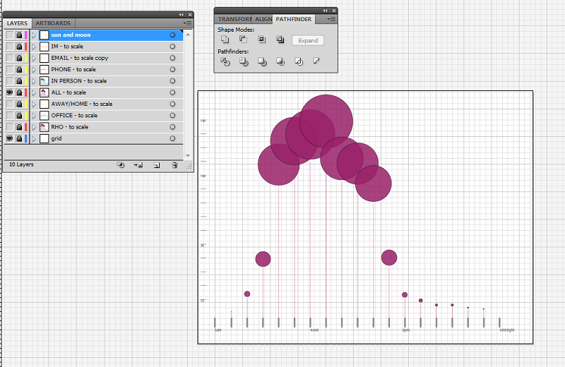

This project used reference transactions from the Galvin Library during the Fall 2013 semester (August 19 — December 7). The data includes the following:
Show that there are few transaction recorded in the evening hours so we can reallocate those hours to where they are most needed.
After noticing that the bulk of transactions occurred between 10am and 3pm, I thought I could relate that to an image of the sun rising and setting. Here was an initial sketch:

Then I realized that I wanted to show the number of transactions in scale. This worked well in Adobe Illustrator, where 139 transactions easily became a circle that was 139 pixels wide — and could be easily resized in a vector program. Here is a test from the "all transaction" data:
